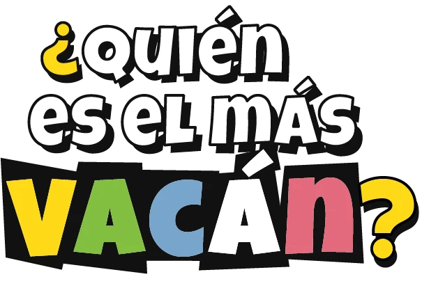
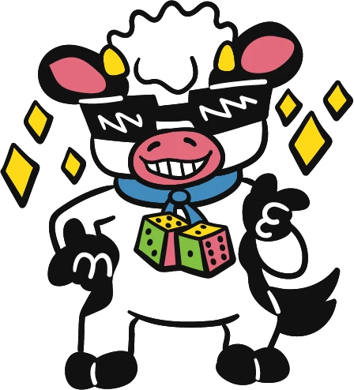

Responde verdadero o falso y usa tus cartas de acción para cambiar las respuestas de tus rivales. El primer cubo que llega al 10 es el más vacán.
Danny Blue Jet · Imnoveja · 2 a 8 jugadores · 8+ · 15 a 30 min
Escribe el nombre de cada jugador junto al color de su vaca. Los colores sin nombre no juegan.